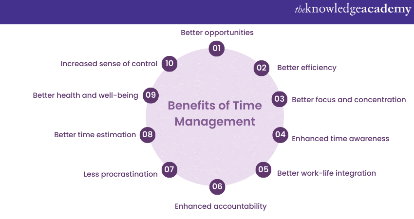

Time management | |
Read about useful time management tools here
Forma (kalkulators, datums)
Cita lapa nav ļoti noderīga
MB un MiB kallkulators
Time Management is the process of planning, organizing, and prioritizing tasks to make the most efficient use of available time. It involves setting goals, breaking them down into manageable steps, and allocating time for each activity. By implementing effective Time Management Strategies, individuals can enhance their productivity, reduce stress, and optimise their use of time.
The Importance of Time Management for students is particularly vital. Juggling academic responsibilities, extracurricular activities, and personal commitments can be overwhelming without proper organisation and prioritisation. By efficiently allocating time to studying, assignment completion, and revision, students can improve their learning outcomes, reduce last-minute cramming, and cultivate a healthy work-life balance.
The Importance of Time Management in the workplace plays a crucial role in professional success. With numerous tasks, deadlines, and responsibilities, employees need to manage their time effectively to boost productivity, meet project goals, and enhance their reputation for reliability and efficiency. Moreover, effective Time Management enables individuals to maintain a healthy work-life integration, leading to increased job satisfaction.
Time Management plays a vital role in various aspects of life, from personal to professional. Effectively managing time is crucial for maximising productivity, reducing stress levels, achieving goals, maintaining a healthy work-life balance, and promoting personal growth. This blog section will describe the Importance of Time Management in greater detail:
Chipi chipi chapa chapa
Dubi dubi daba daba
Mágico mi dubi dubi
Bum, bum, bum, bum
Chipi chipi chapa chapa
Dubi dubi daba daba
Mágico mi dubi dubi
Bum
Importance of Time Management
- Increased productivity: Time Management allows individuals to prioritize tasks and allocate their time efficiently. By focusing on high-priority activities, individuals can make the most of their productive hours, accomplish more in less time, and achieve better results. Effective Time Management prevents wasting time on non-essential tasks or getting overwhelmed by a heavy workload.
- Reduced stress levels: Poor Time Management often leads to increased stress levels. Procrastination can be avoided, as well as missed deadlines, and last-minute rushes, which create unnecessary pressure and anxiety. By effectively managing time, individuals can plan and organise their tasks, stay ahead of deadlines, and approach their responsibilities with a calmer and more composed mindset. Reduced stress levels contribute to better mental and emotional well-being.
- Improved decision-making: Time Management allows individuals to allocate sufficient time for critical thinking and decision-making. Rushed and impulsive decisions can lead to negative consequences. With effective Time Management, individuals have the space to evaluate options, weigh pros and cons, gather information, and make informed decisions. This applies to both personal and professional choices.
- Enhanced goal achievement: Time Management is instrumental in setting and achieving goals. By breaking down larger goals into smaller, manageable tasks, individuals can create a roadmap for success. Effective Time Management helps allocate dedicated time slots for specific tasks, ensuring steady progress towards the desired outcome. Regular progress boosts motivation and creates a sense of accomplishment as goals are achieved step by step.
- Healthy work-life balance: Time Management is essential for maintaining a healthy balance between work and personal life. Without proper Time Management, work can encroach on personal time, leading to burnout and strained relationships. By allocating time for work-related tasks as well as personal activities, hobbies, and self-care, individuals can nurture a balanced lifestyle, improving overall well-being and satisfaction.
- Increased effectiveness: Time Management allows individuals to identify and eliminate time-wasting activities or unnecessary distractions Individuals can work more efficiently and effectively by organising tasks and streamlining processes. Prioritising tasks, setting deadlines, and managing resources optimally contribute to improved efficiency in completing tasks and achieving desired outcomes.
- Accountability and discipline: Effective Time Management cultivates a sense of accountability and discipline. By setting deadlines and creating schedules, individuals hold themselves responsible for completing tasks within the allocated time frames. This accountability fosters discipline, commitment, and a proactive approach to managing responsibilities and meeting deadlines.
- Improved quality of life: Time Management enables individuals to balance their various responsibilities and commitments, resulting in an improved quality of life. Individuals can dedicate time to their passions, hobbies, relationships, and self-care by effectively managing time. This balance leads to greater satisfaction, fulfilment, and overall happiness.
Benefits of Time Management
- Better opportunities: With better Time Management, time becomes available for attending workshops, taking courses, networking, or exploring new hobbies and interests, which can lead to personal and career advancement.
- Better efficiency: Effective Time Management allows individuals to allocate their time strategically, ensuring that tasks are completed in the most efficient manner. By prioritising and organising tasks, individuals can minimise time wasted on unimportant or non-essential activities, leading to increased efficiency and optimal use of resources.
- Better focus and concentration: Time Management helps individuals eliminate distractions and create dedicated blocks of time for specific tasks. By focusing on one task at a time without interruptions, individuals can enhance their concentration and productivity. This leads to higher quality work and better outcomes.
- Enhanced time awareness: Time Management cultivates a heightened sense of awareness and appreciation for the value of time. Individuals become more conscious of how they allocate their time and recognise the importance of making the most of each moment. This awareness helps individuals make conscious choices, prioritise effectively, and avoid procrastination.
- Better work-life integration: Effective Time Management allows individuals to strike a balance between professional life and personal life. By allocating time for work-related tasks, as well as personal activities, hobbies, and self-care, individuals can experience a more harmonious and fulfilling lifestyle. This integration promotes overall well-being and prevents burnout.
- Enhanced accountability: Time Management instils a sense of accountability within individuals. By setting deadlines and creating schedules, individuals hold themselves responsible for completing tasks within the allocated time frames. This accountability promotes discipline, commitment, and a proactive approach to work and personal goals.
- Less procrastination: Procrastination can hinder productivity and lead to increased stress levels. Some of the Time Management techniques include breaking tasks into smaller parts and setting specific deadlines, which helps individuals overcome procrastination tendencies. With a structured approach, individuals are more motivated to start and complete tasks promptly.
- Better time estimation: Time Management skills enable individuals to accurately estimate the time required to complete various tasks. This helps in planning and scheduling effectively, avoiding over-commitment, and preventing a backlog of unfinished work. Accurate time estimation leads to better time allocation and a realistic workload.
- Better health and well-being: Effective Time Management can positively impact physical and mental health. By allocating time for exercise, relaxation, and self-care activities, individuals can reduce stress levels, improve their overall well-being, and maintain a healthy lifestyle. Taking breaks and incorporating leisure time into schedules promotes rejuvenation and prevents burnout.
- Increased sense of control: Time Management empowers individuals by providing them with a sense of control over their schedules and responsibilities. By taking charge of their time, individuals become more proactive, organised, and confident in managing their tasks and achieving their goals.

Practical Time Management strategies
Implementing practical Time Management strategies can significantly enhance productivity, reduce stress levels, and help individuals make the most of their time. By incorporating these strategies into daily routines, individuals can optimise their use of time and achieve their goals more effectively. This blog section will suggest you some practical Time Management strategies to consider:
- Set clear goals: Start by defining your goals, both short-term and long-term. Clear goals provide a sense of direction and purpose, guiding your time allocation and priorities. Make sure your goals are Specific, Measurable, Attainable, Relevant, and Time-bound (SMART goals). This clarity helps you align your activities and focus on what truly matters.
- Prioritise tasks: Determine the urgency and importance of each task on your to-do list. Use techniques like Eisenhower's Urgent-Important Matrix, where tasks are categorised as urgent and important, important but not urgent, urgent but not important, or neither urgent nor important. Prioritise tasks based on their significance and allocate time accordingly.
- Plan and schedule: Dedicate time for planning and scheduling your activities. Use tools like calendars, planners, or digital apps to organise your day, week, or month. Break down the larger assignments into smaller steps and allocate specific time slots for each activity. Set realistic deadlines, allowing buffer time for unexpected interruptions or delays.
- Time blocking: Time blocking involves allocating specific time blocks for different activities. Designate blocks of uninterrupted time for focused work, meetings, emails, breaks, and personal activities. By creating a structured routine, time blocking minimises distractions and improves productivity and focus.
- Avoid multitasking: While multitasking may seem efficient, it often leads to reduced productivity and increased errors. Instead, focus on one task at a time, giving it your undivided attention. Complete each task before moving on to the next. By concentrating on one activity, you can work more efficiently and produce higher-quality results.
- Learn to delegate: Recognise tasks that can be delegated to others. Delegating frees up your time for more important or high-value activities. Identify competent individuals who can handle specific tasks and assign responsibilities accordingly. Effective delegation enhances productivity and allows you to focus on tasks that require your expertise.
- Manage digital distractions: Digital distractions, such as social media notifications or emails, can consume valuable time. Minimise distractions by scheduling dedicated time to check and respond to emails or messages. Consider using website blockers or productivity apps to limit access to distracting websites or apps during focused work periods.
- Take regular breaks: Breaks are essential for maintaining focus and productivity. Incorporate short breaks into your schedule to recharge and refresh your mind. Use this time to engage in activities that help you relax and rejuvenate, such as taking a walk, practising deep breathing exercises, or enjoying a hobby.
- Review and reflect: Regularly review your progress and reflect on your Time Management practices. Analyse what worked well and what needs improvement. Adjust your strategies accordingly to maximise efficiency and effectiveness. Continuous evaluation and adaptation lead to ongoing improvement in managing your time.
- Practice self-care: Prioritise self-care activities, including sleep, exercise, healthy eating, and relaxation. Taking care of your physical as well as mental well-being enhances your productivity, energy levels, and overall quality of life. Ensure that self-care is integrated into your schedule as a non-negotiable priority.
Conclusion
All in all, mastering Time Management is a skill that can transform your personal and professional life. By recognising the Importance of Time Management, understanding its benefits, and implementing practical strategies, you can unlock your full potential, achieve your goals, and lead a more balanced and fulfilling life. Remember, time is a finite resource, so make every moment count by managing it effectively. Embrace the power of Time Management, and watch as your productivity, satisfaction, and overall well-being soar.
Atsauces
1. Attēls (ar pulksteni)